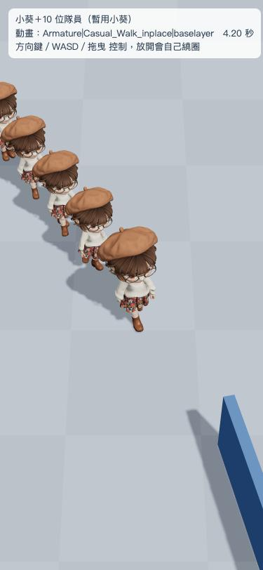
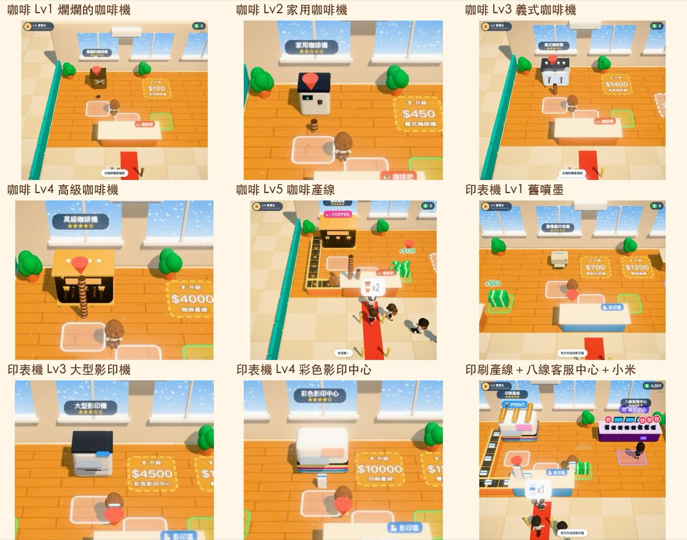

把遊戲放上網：一個網址，朋友手機打開就能玩
用 GitHub Pages 免費把作品變成網址。Claude 會幫你整理、上傳，但每次推上網之前一定先問你。
本課步驟（8 步）
常見卡關 · 影片大綱- GitHub、GitHub Pages、「推上去」是什麼意思
- 第一次讓電腦登入 GitHub
- 請 Claude 建倉庫、開 Pages、推上去
- 之後改版的固定流程：改 → 本機測 → 問你 → 推
先搞懂三個詞
註冊 GitHub 帳號
到 github.com 自己註冊一個免費帳號。帳號要自己建，Claude 不會幫你註冊、也不會幫你輸入密碼。
帳號名稱會出現在網址裡，例如帳號叫 pokemonida99，網址就是 pokemonida99.github.io/作品名/。取一個你願意公開的名字。
讓電腦登入 GitHub 一次
Claude 會請你在 Claude 旁邊的終端機打一行指令（或請它幫你開）：
gh auth login照提示選 GitHub.com、用瀏覽器登入，在 GitHub 的官方網頁按授權。這一次做完，之後 Claude 就能幫你推了。
如果 Claude 說電腦還沒有 gh 這個工具，請它幫你安裝。安裝時它會先問你。
先在自己電腦上玩過
上網之前，Claude 會在內建瀏覽器用手機尺寸開起來測：能不能點、會不會卡、字有沒有被切掉，再給你看截圖。你自己也玩一下，覺得可以了再上線。


跟 Claude 說：放上 GitHub Pages
《上班啟示錄》第一次上線，作者就是說這一句：
建 git repo 放上 GitHub Pages。
Claude 會做這些事：建一個倉庫、把該公開的檔案放進去（原始大圖、真人參考照這類不會放）、開啟 Pages、推上去，最後給你網址。
上網前可以多問一句：「哪些檔案會被放上去？列給我看。」確認裡面沒有真人照片、私人文件、帳號資料。
Claude 先問，你說好才推
第一次之後，每次改版 Claude 做完都會先停下來問你，不會自己推上網。真實的樣子大概是：
需要：真實對話裡 Claude 做完、問要不要推的那一段截圖。
打開網址，分享給朋友
等一兩分鐘，打開網址就是新版：pokemonida99.github.io/office-apocalypse

分享時提醒朋友：用 Chrome 或 Safari 打開，LINE、FB 裡面直接點開的瀏覽器有時候跑不動。iPhone 可以按「分享 → 加入主畫面」，用起來就像 App。
之後改版，固定這個節奏
《上班啟示錄》從 v0.1 一路改到 v0.6.2，每次都是同樣四步：
- 說要改什麼：「磁鐵有點太強，再多一個等級」
- Claude 改好、自己測，給你看截圖
- Claude 問你要不要推
- 你說「推上去」，一兩分鐘後網址更新

網址打開是 404：Pages 剛開通要等幾分鐘。等五分鐘還是不行，請 Claude 檢查 Pages 設定。
朋友看到的還是舊版：手機有快取。請朋友重新整理，或請 Claude 改版本號（它通常會順便處理）。
推不上去，說要登入：電腦的 GitHub 登入過期了，再跑一次 gh auth login。
LINE 裡打開跑不動：請朋友改用 Chrome 或 Safari 開。《上班啟示錄》開不起來時會跳出說明卡告訴玩家怎麼辦。
不想公開的檔案被放上去了：馬上跟 Claude 說，它會把檔案移出倉庫。但已經公開過的東西可能被別人存走，所以推之前先看清單最保險。
| 鏡頭 | 畫面 | 旁白重點 |
|---|---|---|
| 1 | 手機掃 QR code 打開遊戲 | 「做好的遊戲，傳一個網址，朋友就能玩。」 |
| 2 | 三張卡：GitHub、Pages、推上去 | 倉庫、網址、送新版上去 |
| 3 | github.com 註冊頁（不拍帳號資料） | 帳號自己建，名字會出現在網址裡 |
| 4 | 終端機打 gh auth login，瀏覽器按授權 | 只要做一次 |
| 5 | Claude 在內建瀏覽器用手機尺寸測遊戲 | 上網前先在自己電腦玩過 |
| 6 | 打字「建 git repo 放上 GitHub Pages」 | 一句話上線；可以先問要放哪些檔案 |
| 7 | Claude 問「要推上去嗎？」→ 回「推上去」 | Claude 一定先問，你說好才推 |
| 8 | 網址打開、加到主畫面 | 用 Chrome／Safari 開，可以加到主畫面 |
| 9 | 版本號 v0.1 → v0.6.2 快速跳 | 改、測、問、推，一直循環 |